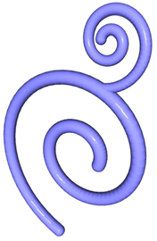
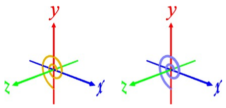
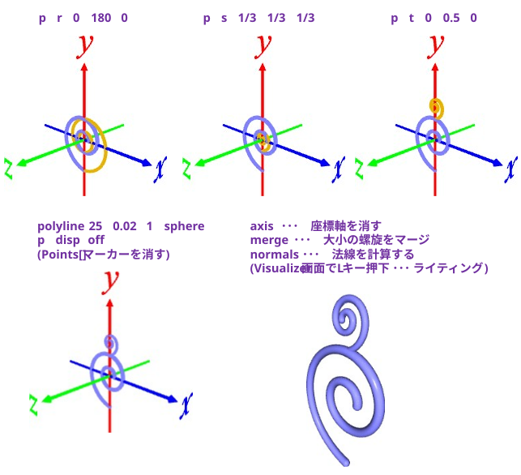

(AIモードによれば･･･)
唐草模様の最も基本的なパーツは「渦巻き」は等角螺旋（ベルヌーイの螺旋）として表されることが多い。
\[
r = a e^{bθ}
\]
・r ：中心からの距離
・θ ：回転角
・a, b：渦の広がり方を決める定数
[1] 螺旋をつくる
a = 0.1, b = 0.15 として螺旋状の点を生成する。
p curve np.linspace(0,3.5*np.pi,100) 0.1*np.exp(0.15*T)*np.cos(T) 0.1*np.exp(0.15*T)*np.sin(T) [0]*len(T)
螺旋状の 3D 座標をセーブする
p save spiral.npy
メッシュ化(パイプ化)する
polyline 25 0.03 1 sphere sphere
※ パイプの画数：25, 半径：0.03
※ 被覆率：1 (=100%)
※ 始端(内側), 終端(外側) にキャップをはめる

[2] もう１個、螺旋をつくって、裏返して縮小して位置合わせする
螺旋の 3D 座標をロードする
※ [1] に引き続き実施する場合、3D 座標は保持されているのでロードはスキップ可能
l spiral.npy
裏返す
p r 0 180 0
縮小する
p s 1/3 1/3 1/3
位置合わせする
p t 0 0.5 0
メッシュ化(パイプ化)する
polyline 25 0.02 1 sphere
※ ちょっと細くしてみた(0.03 → 0.02)
※ 終端は埋もれるのでキャップをつけない
